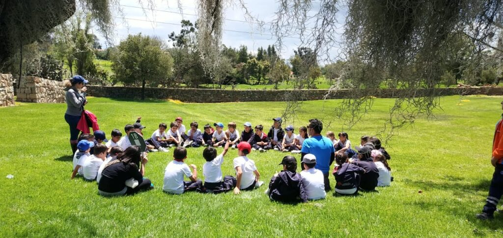

CONVIVENCIAS
En la naturaleza cabemosTODOS
Convivencias programadas por las catequesis:
Iglesia Santo Domingo 2024/2025
Desde hace años la parroquia se ha estado encargando de programar este tipo de actividades productivas, llevadas a cabo en entornos saludables dentro de la naturaleza. Para ello, dsitintos responsables se encargan de dar formularios a los alumnos para traerlos firmados por sus tutores legales. (Estas convivencias son siempre programadas algunos sábados).

Próximas convivencias
Iglesia Santo Domingo 2024/2025
Sábado 25 de Mayo: 10:00 - 13:30, (traer almuerzo).
Sábado 31 de Mayo: 9:00 - 17:30, (traer comida y desayuno).

¿Porqué lo hacemos?
Un estudio realizado por la University of East Anglia explica que la exposición a la naturaleza y a los espacios verdes reduce los riesgos de padecer diabetes tipo II, enfermedad cardiovascular, muerte prematura, estrés y presión alta.
Publicaciones de otros usuarios:
-
 User123
User123
Monte / Roldán -
 :))))
:))))
Monte / Sán Julián -
 USER_666
USER_666
Puerto / Cartagena